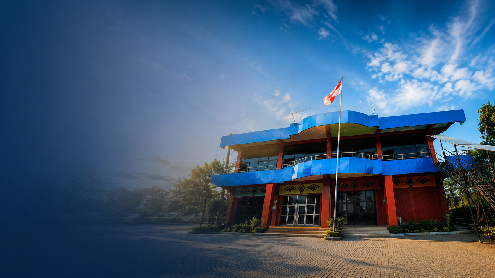
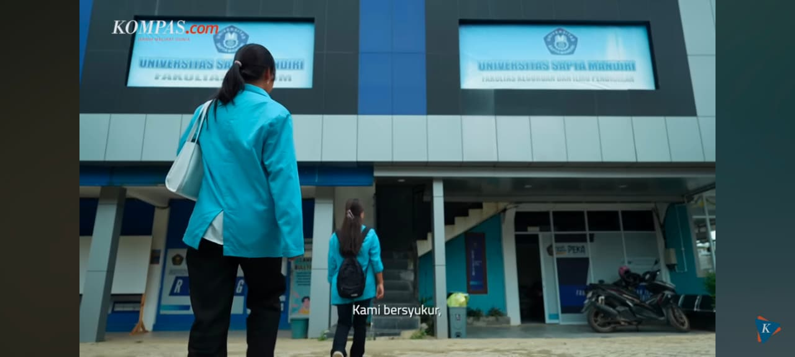
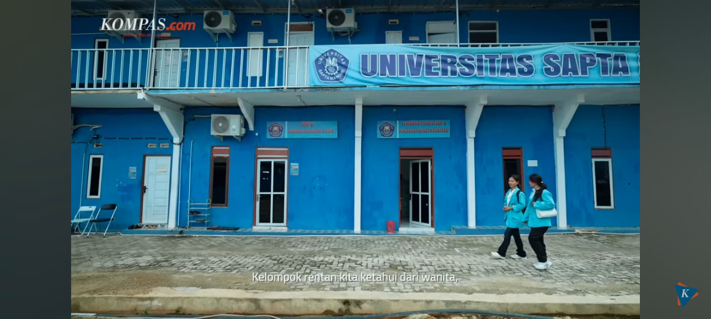

Universitas
Sapta Mandiri
Inovatif · Kolaboratif · Berdampak
Mendorong penelitian berkualitas dan pengabdian masyarakat berbasis riset, berlandaskan nilai moral dan spiritual menuju daya saing nasional dan internasional.
Penelitian Aktif
Kegiatan PkM
Publikasi
HKI Terdaftar
Mitra Aktif
Akses Cepat
Layanan dan informasi yang paling sering diakses
Bidang Fokus Riset
Tujuh bidang unggulan sesuai Roadmap Penelitian UnivSM 2025—2029
Pendidikan & Karakter Bangsa
Inovasi pembelajaran, pengembangan kurikulum, dan penguatan karakter berbasis nilai moral.
TI & Transformasi Digital
Pengembangan sistem informasi, kecerdasan buatan, dan transformasi digital tata kelola.
Kesehatan & Kesejahteraan Masyarakat
Riset kesehatan komunitas, promosi kesehatan, dan pemberdayaan masyarakat rentan.
Pemberdayaan Ekonomi & UMKM
Pendampingan UMKM, kewirausahaan sosial, dan pengembangan ekonomi lokal.
Hukum, Tata Kelola & Kebijakan Publik
Kajian kebijakan, reformasi hukum, dan tata kelola pemerintahan yang akuntabel.
Manajemen Pendidikan & TI Tata Kelola
Sistem informasi pendidikan, akreditasi, dan manajemen mutu berbasis teknologi.
Manajemen & Teknologi Konstruksi
Material berkelanjutan, manajemen proyek konstruksi, dan inovasi infrastruktur.
Lihat Roadmap Lengkap 2025—2029
RoadmapPengumuman
Batas Akhir Pengajuan Proposal Penelitian Internal 2026
28 Juni 2026
Jadwal Monev Tengah Semester Penelitian & PkM
15 Juli 2026
Insentif Publikasi dan HKI Periode Semester Genap 2026
1 Juli 2026
Pendaftaran Program Hibah Eksternal Dikti 2026/2027
10 Agustus 2026
Berita Terbaru
Lihat Semua
WORKSHOP3 Juni 2026
Workshop Penulisan Artikel Ilmiah Terindeks Scopus & Sinta
LPPM UnivSM menyelenggarakan workshop penulisan artikel untuk meningkatkan produktivitas publikasi dosen...

HIBAH28 Mei 2026
Launching Hibah Penelitian Internal UnivSM 2026 Resmi Dibuka
LPPM secara resmi membuka pendaftaran hibah penelitian internal untuk seluruh dosen UnivSM tahun anggaran 2026...
15 Mei 2026
Seminar Nasional Tridharma UnivSM 2026: Riset untuk Negeri
Seminar nasional bertema "Sinergi Tridharma untuk Mewujudkan Pembangunan Berkelanjutan" dihadiri oleh ratusan peserta dari berbagai perguruan tinggi di Indonesia...
Ketua LPPM UnivSM
Assalamu'alaikum Wr. Wb.
Selamat datang di website resmi Lembaga Penelitian dan Pengabdian kepada Masyarakat (LPPM) Universitas Sapta Mandiri. LPPM hadir sebagai garda terdepan dalam mendorong terciptanya budaya riset yang inovatif, kolaboratif, dan berdampak nyata bagi masyarakat.
Melalui platform digital ini, kami menghadirkan layanan informasi, pengelolaan penelitian dan PkM, serta dokumentasi capaian Tridharma yang terintegrasi dan mudah diakses oleh seluruh sivitas akademika, mitra, dan masyarakat luas.
Kami berharap website ini menjadi sarana kolaborasi yang efektif dalam mewujudkan visi UnivSM sebagai universitas unggul berlandaskan nilai moral dan spiritual menuju daya saing nasional dan internasional pada tahun 2036.
Wassalamu'alaikum Wr. Wb.
Anita Juniarti, M.Pd
Kepala LPPM Universitas Sapta Mandiri
"Menjadi pusat unggulan dalam penelitian dan pengabdian kepada masyarakat yang inovatif, berlandaskan nilai moral dan spiritual, serta berdaya saing nasional dan internasional pada tahun 2036."
– Visi LPPM UnivSM